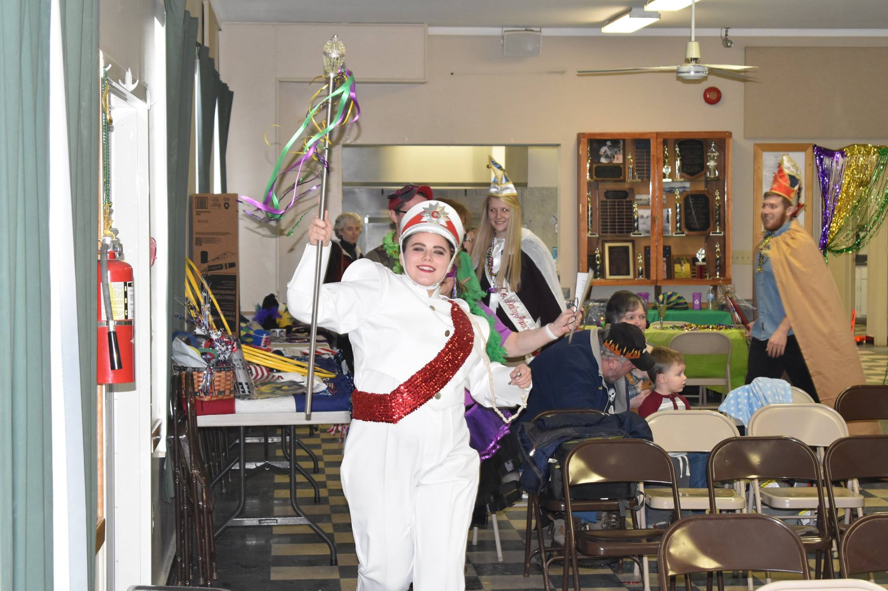
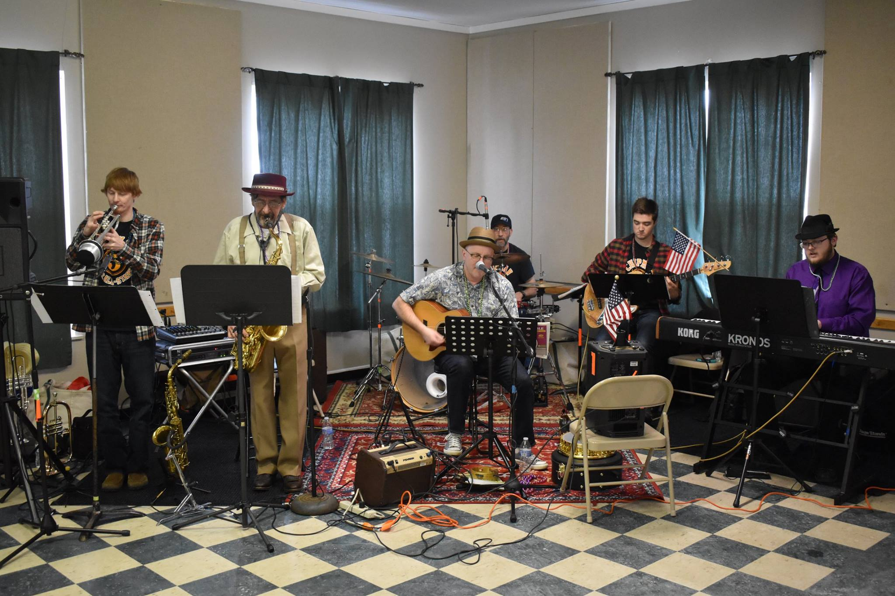
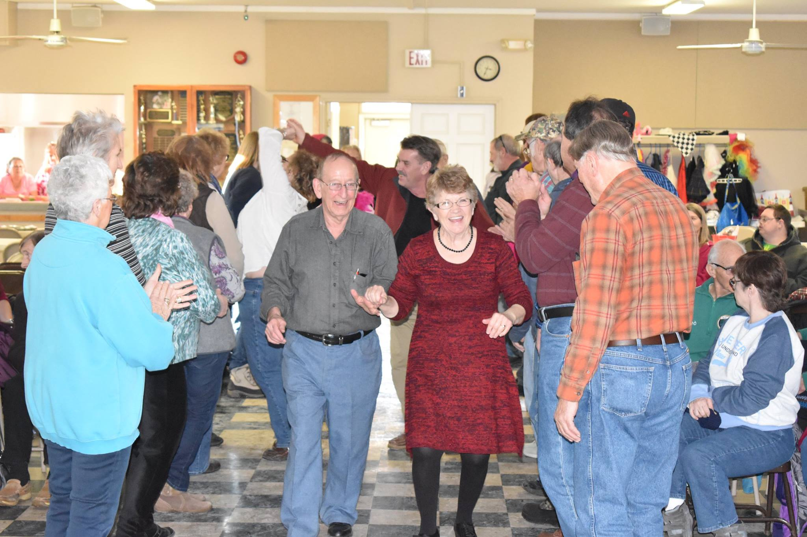
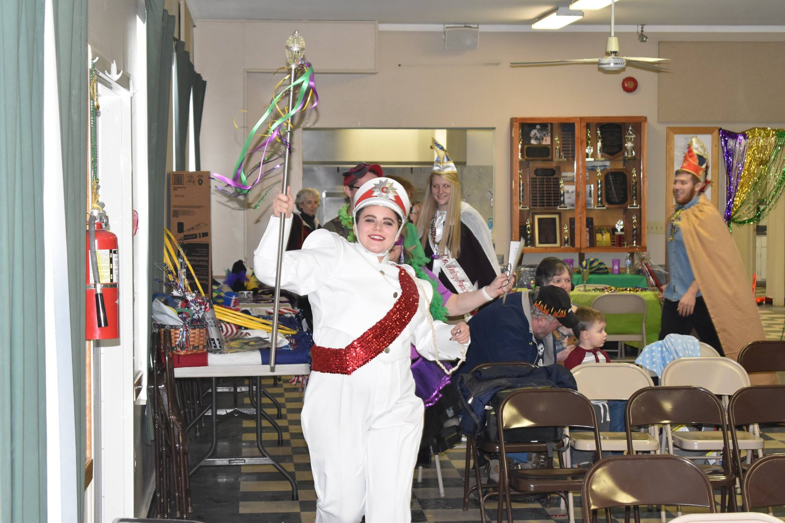
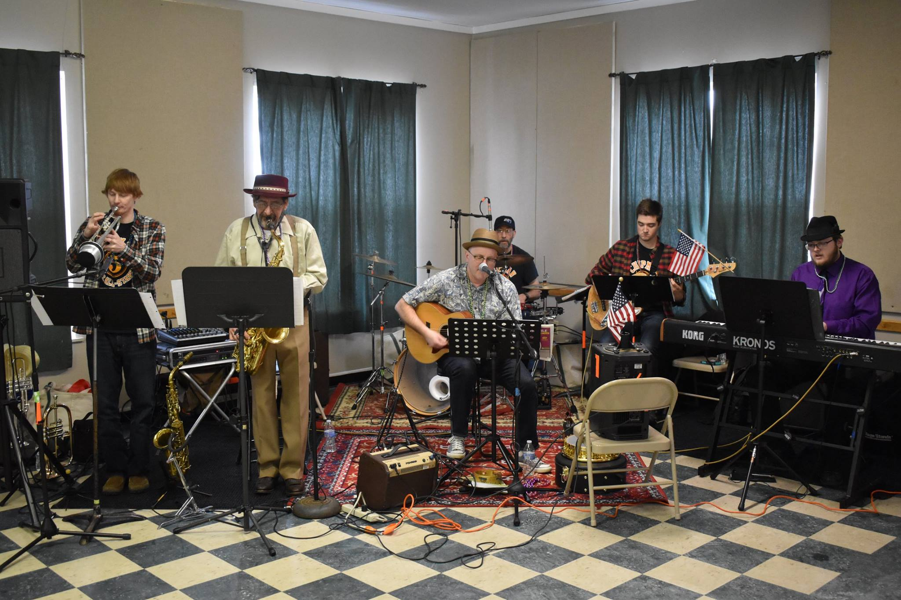
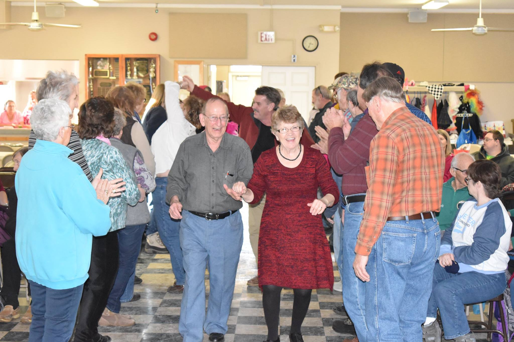

Winter 2022 Schedule
Chipman Jazz All Stars
Sunday February 27, 2022
Dress up in your fun Mardi Gras attire and come along for a parade and great music of Ted Ritzko, Steven Paul Manders, Thomas Baker, Sean Cunningham, and a guest!
Barb Heller
Sunday March 20
Our easy comfy listening event with song and stories to lighten our lives.
String Solstice
Sunday April 3
We are honored to host the 2022 debut performance of Michael Welch, Jennifer Kessler, Chip Lamson, Christian Hosmer, and Larry Baycura.
The Shoes, a family dance event
Saturday April 30, 6 – 9pm
30+ years performing golden oldies of the 50’s and 60’s. Wear your dancing shoes! With Al Netto, Herb Hughes, Denny Verdon, Ted Markwick, and Bill Farr
Tracer James
Sunday May 15
Pedal Steel Guitar.
All MDMS events are family friendly....no smoking, alcohol, or strobe lighting.
 




